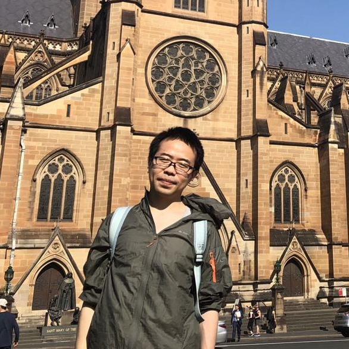

优博论坛
1.徐同同: Guider: GUI Structure and Vision Co-Guided Test Script Repair for Android App
报告简介: GUI测试是Android应用回归测试中的基本测试类型。回归测试保持有效的重要条件是应用更新过程中失效的部分测试得到正确维护。在这个报告里，我们提出了一种新的GUI测试自动化维护工具GUIDER。GUIDER的创新点在于我们提出了一种新的基于屏幕布局的匹配算法，在此基础上，协同设计屏幕布局信息与视觉特征，以更好地理解应用更新过程中的控件变化与映射关系。 GUIDER目前已实现并集成在腾讯wechat测试团队，获得了较好的修复能力与修复效果，GUIDER论文目前已被ISSTA'21收录。
简介:徐同同，南京大学计算机系五年级博士生， 他的研究方向包括 program testing, debugging, analysis和repair。他目前发表CCF-A类论文3篇。
2.赵泽林: 软件动态更新中对象转换函数的自动合成
报告简介: 软件动态更新（DSU）可以在软件运行过程中对其升级更新。但已有技术无法生成复杂的“对象转换函数”，进而导致更新时的对象状态转换出现错误，使软件动态更新的实用性大打折扣。我们对Tomcat服务器的190个类更新进行深入调研，重新探索了生成复杂对象转换函数的问题。一个重要发现是，大多数复杂对象转换函数可以通过组装软件中已有的代码片段来生成。 基于该发现，我们提出一种简单的领域特定语言以及高效的合成算法，自动合成对象转换函数。通过实验对比，我们的方法在生成复杂对象转换函数的任务中，有效性是当前最好技术的7.5倍。
简介:赵泽林，博士生，南京大学计算机科学与技术系在读，导师为马晓星教授和许畅教授。主要研究方向为软件动态更新、软件合成。 在ICSE，APSEC等软件工程领域国际会议发表论文数篇，参与多项国家重点科研项目。研究成果荣获ICSE 2021的ACM SIGSOFT杰出论文奖和ICSE 2021的ACM Europe Council最佳论文奖
3.孙泽宇: 感知领域约束的程序生成
报告简介: 程序生成是软件工程中的重要问题。给定一串自然语言描述，基于自然语言描述的程序自动生成技术自动帮助使用者生成其目标代码。现有的程序生成技术借用深度学习中自然语言翻译技术，通过深度神经网络生成程序代码。然而，不同于自然语言的是，程序语言拥有众多的领域约束，这些约束给神经网络的编码问题带来了困难和挑战。 本报告从程序语法约束和语义约束入手，从两方面角度来介绍一种感知领域约束的基于自然语言描述的程序生成模型。。
简介:孙泽宇是北京大学软件工程研究所2017级硕博连读博士生，导师是张路教授和熊英飞研究员。其主要研究方向是程序自动生成和神经网络测试及修复。 在博士期间，孙泽宇同学共在ICSE，ESEC/FSE，ASE，AAAI，IJCAI等软件工程及人工智能顶级会议发表论文多篇。
4.姜艳杰: 面向源代码的缩写词自动扩展方法
报告简介: 标识符是源代码的重要组成部分，从字符的角度来看，其占据源代码的70%。因此，标识符的质量直接影响源代码的理解与维护。然后，缩写词被广泛地使用在标识符中，进而影响代码的质量。 为此，研究人员提出了多种缩写词的扩展方法，然而，这些方法要么不准确要么局限于特定种类的标识符。 为了更加准确地扩展标识符中的缩写词，本文基于标识符之间的语义关系提出了一系列缩写词扩展的方法。首先，提出了一种针对参数中缩写词的扩展方法，随后，将该方法一般化实现了对所有标识符中缩写词的扩展。实验结果表明，基于语义关系的缩写词扩展方法具有较高的准确性。
简介:北京理工大学博士研究生，导师为刘辉教授。研究兴趣主要包括软件质量评估，软件重构和缺陷数据集的构建。已发表CCF A类论文5篇。
5.高志鹏: Automating the removal of obsolete TODO comments
报告简介: TODO 注释在软件开发过程中被广泛地使用。然而当开发者完成TODO的开发任务之后会时常忘记或者忽视把相应的TODO注释移除， 从而会在开发的项目中残留下过期的TODO注释。这种过期的TODO注释会造成代码变更和代码注释的不一致性，这种过期的代码注释会严重影响代码的可读性和可理解性， 增加软件开发的维护成本，严重的时候甚至会引入软件缺陷。在本研究中，我们提出了一种检测软件仓库中过期TODO注释的方法 TDCleaner，我们的方法能够帮助开发者快速定位代码仓库中的过期TODO注释，同时避免开发者在开发过程中引入过期的TODO注释
简介:高志鹏，莫纳什大学软件工程在读博士生，导师是夏鑫博士和John Grundy教授。他的研究方向主要围绕智能化的软件仓库挖掘，包括克隆检测，缺陷检测，代码搜索，技术问答社区推荐等。博士期间他已经在国际著名软件工程期刊/会议（TSE, TOSEM, FSE, ICSME）发表了多篇论文。
6.陈秋远: Why My Code Summarization Model Does Not Work: Code Comment Improvement with Category Prediction
报告简介: 代码注释对于提高代码可读性，可维护性以及保证软件质量有着重要的作用，然而撰写注释会消耗开发者大量的时间。因此注释自动生成技术受到了关注，成为近年来的软件工程领域的研究热点。注释生成（或者称为代码摘要）旨在生成给定源代码块的代码注释，通常通过在现有代码块-注释对上训练机器学习算法来执行。然而实践中的代码注释有不同的意图。例如，一些代码注释可能会解释这些方法是如何工作的，而另一些则解释了为什么要编写某些方法。基于这个观察，我们希望可以在多大程度上利用这种关系来提高代码摘要性能。我们首先将注释分为六个意图类别并手动标记 20,000 个<代码，注释>对。基于此数据集，我们进行了一项实验，以研究不同最先进的代码摘要方法在类别上的性能。我们发现不同代码摘要方法的性能在不同类别中存在很大差异，并由此设计了一种复合方法来证明注释类别预测可以促进代码摘要以达到更好的结果。 该方法利用分类的代码类别标记数据来训练分类器来推断类别。然后它为推断的类别选择最合适的模型并输出复合结果。我们的复合方法在 ROUGE-L 和 BLEU-4超过了其他不考虑注释类别的方法。这项研究着重突出了注释分类对代码摘要的意义，并设计了相应的实验完成了验证。
简介:陈秋远是浙江大学计算机软件研究所2017级博士生，导师是李善平和夏鑫老师。其主要研究方向是面向智能化软件工程的程序理解与自动文档生成。在读博期间，陈秋远同学发表了多项研究，多篇录取在软件工程顶级期刊TOSEM以及人工智能会议ICONIP等。
7.刘芳: Multi-task Learning based Pre-trained Language Model for Code Completion
报告简介: 在代码补全任务中，token的向量表示和其对应的静态类型信息发挥着巨大的作用。为了充分利用 token 的上下文信息和静态类型信息，本文提出支持代码理解和生成的预训练语言模型(CugLM)， 并将其应用于代码补全任务中。通过在大规模的程序语料库中进行自监督式预训练， 并针对程序特性设计预训练任务，模型能够从语料中学习到丰富的程序语义知识。模型预训练好之后，在代码补全任务中进行微调，在预测下一个 token 时，CugLM 采用多任务学习的框架同时预测标识符的类型和值， 预测的类型被用于辅助值的预测。在Java 和 TypeScript 数据集的代码补全中，CugLM都取得了目前最好的效果。

简介:刘芳是北京大学软件工程研究所2017级博士生，导师是金芝教授和李戈副教授。其主要研究方向是基于深度学习的程序理解与推荐。 在博士期间，刘芳同学在ASE，ICPC，JSS等软件工程顶级会议及期刊发表了代码表示与补全相关论文。
8.陈崧强: Validation on Machine Reading Comprehension Software Without Annotated Labels: A Property-Based Method
报告简介: 本次分享报告的工作《Validation on Machine Reading Comprehension Software Without Annotated Labels: A Property-Based Method》录用在ESEC/FSE'21。 该工作针对一种复杂的、智能的软件——机器阅读理解模型，提出和讨论了一种基于性质（能力）的无标签验证方法。

简介:陈崧强来自武汉大学计算机学院、武汉大学CSTAR软件测试分析研究组，导师为谢晓园教授，成果录用在ESEC/FSE、ASE、ICPC、IEEE TR等软件工程及计算机科学学术会议、期刊，研究领域围绕智能软件工程，包括基于深度学习（自然语言处理、对比学习等）技术的智能化软件开发方法 （针对代码、注释及文档的软件仓库挖掘）以及对智能软件系统（深度学习模型、软件）的（基于蜕变测试的）可靠性验证与测试等。